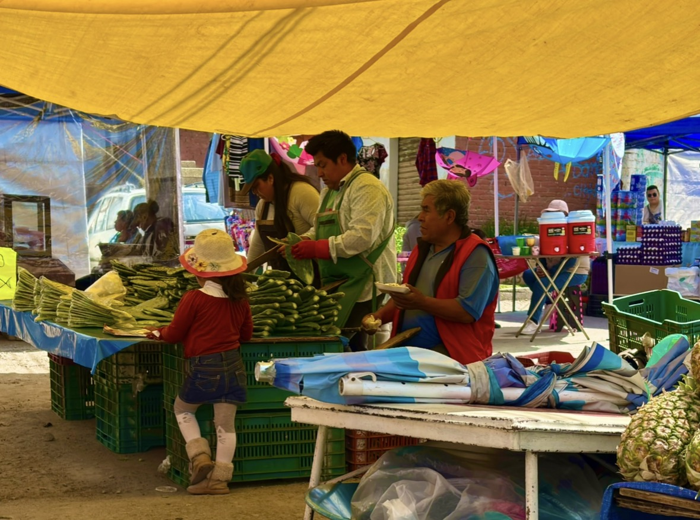
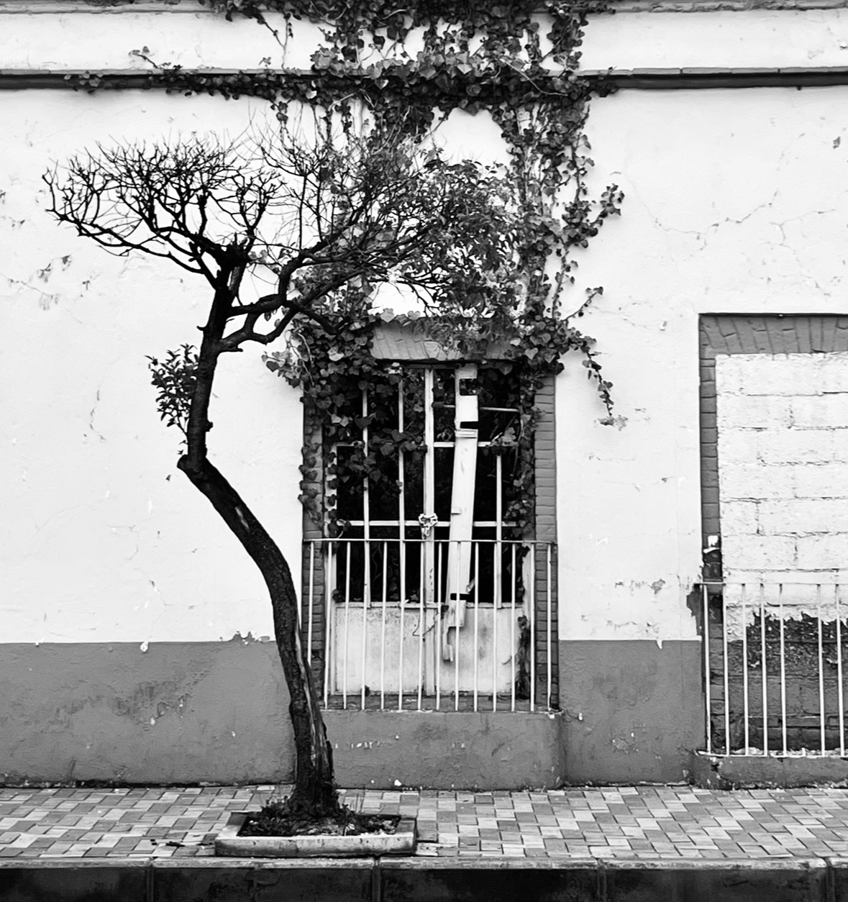

01
Identidades sin rostro
Esta serie fotográfica aborda la identidad y el paso del tiempo a través de un unico elemento visual: las manos. El proyecto se fundamenta en la premisa de que las extremidades son capaces de revelar estados ocultos de las personas con la misma precisión que un retrato facial. A través de diferentes capturas, la obra demuestra cómo el lenguaje de las manos posee la carga narrativa suficiente para presentar la condición humana en ausencia de la mirada del sujeto.
02
El corazón de la calle

Esta serie fotográfica propone una mirada a la escencia mexicana presente en estos espacios llamados "tianguis", donde la alegría, el intercambio y la convivencia se manifiestan como expresiones vividas de una cultura compartida.
03
Fachadas

Esta serie fotográfica explora la estética del abandono y el olvido a través del retrato de fachadas urbanas comunes. Aunque igmnoradas por la rutina, estas estructuras poseen una singularidad visual única que funcionan como un registro del tiempo. L a serie no pretende descifrar las vivencias que albergaron estos espacios, sino honrrar la belleza superficial de su decadencia física.